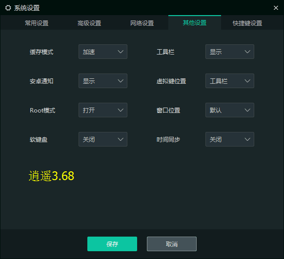

1. 先安装模拟器，注意不要安装到中文目录下面，默认的目录就好
- 雷电模拟器安装好后设置（右侧工具栏齿轮按钮）
- BlueStacks模拟器安装好后，到里面的设置/应用程序/全部里面找到AppSync（应用程序同步），按停用（如有更新，先按卸
载更新），再按禁用按钮。然后关闭模拟器。
- 逍遥模拟器设置（右侧工具栏齿轮按钮）

- 
- 然后关闭雷电模拟器，关之前勾上不再提示。
- 靠谱模拟器设置
2. 模拟器里面安装部落冲突游戏
- 雷电和逍遥模拟器使用右侧的安装apk功能安装
- BlueStacks和靠谱模拟器使用雪狼系统分页的安装apk功能安装
- BlueStacks安装好COC后，要手动运行一次，这样图片才会在模拟器首页桌面
3. 再安装对应版本的雪狼
- 下载对应的安装包安装即可，安装完成桌面会有快捷方式
- 逍遥的需要到雪狼系统分页设置逍遥模拟器的路径，设置后重启雪狼，再到雪狼系统分页检查和设置实例
- 雷电的会自动识别雷电模拟器的安装位置，和设置实例。如果路径没识别，请重启一下电脑
- 非谷歌、昆仑的COC客户端，如腾讯，SuperCell等，需要在雪狼右上角勾选COC类型
- 默认安装目录
4. 设置安全软件，以360为例
- 把雪狼exe和雪狼安装目录添加到信任区（以雪狼逍遥版为例）
- 关闭360的核晶防护